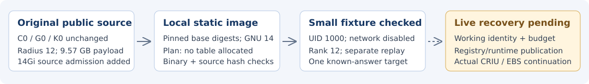

The exact-input collector now has a local static image, a guarded command wrapper and an explicit 14Gi recovery-memory option. The original source point, target, factor base, coefficient domain and scientific deadline are unchanged.

| Check | Observed scope |
|---|---|
| Native controls | 138 nonzero toy targets; 2,363 differential pairs; 2,187 walker states; 129 source-field scalar checks. |
| Command wrapper | Original static plan plus five rejection controls: missing supervisor, outside-PVC path, changed input, changed binary, reused context. |
| Local image | Static GNU 14 build from published source, digest-pinned bases; default plan returned 9,566,497,092 payload bytes without allocating that table. |
| Image fixture | UID 1000; no network; 512 MiB limit; exit 0. Separate affine/Euclidean replay checked rank 12, all twelve base logs and one small known-answer target. |
| Controller | 15 contract tests and 3 top-level cloud tests pass. Both candidate and unchanged base full suites have 71 pass / 1 fail, in the same unchanged process-owner test. |
The prior 8Gi maximum is below the original table payload. Explicit 14Gi now reaches computation and fresh-epoch requests/limits in source tests; default 4Gi and explicit 8Gi request identities are preserved. No controller has been deployed.
The prepared recovery storage requirement is 64Gi: up to three 14Gi memory envelopes leave 22Gi for other state. This is a capacity calculation, not observed RSS or checkpoint size. It requires storage-cost admission.
Source: e0f26ec5928266b25edb0a795d9099e18dce8519
Local image configuration ID:
sha256:5841e9fd55f005068f449f6cfed4f7c28adc4f84994bf0555c8de6323dd44fe8
This local configuration ID is not a registry manifest digest. Exact binary hashes, raw controller failures, compiler/build logs and the image replay are in validation/component.json and its file manifest.